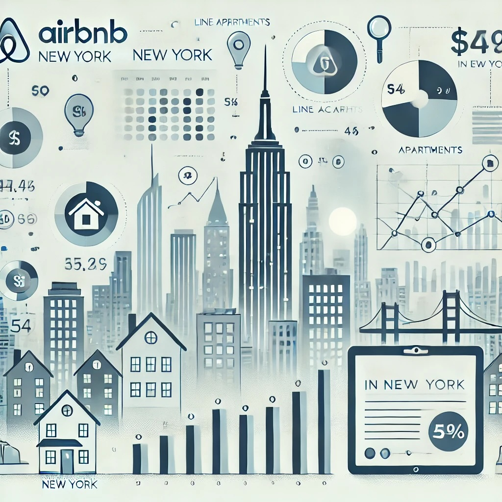

This is Week 2 of Data with Danny SQL Chalenge problems. We help a pizza restaurant learn their customer's preferences and look at some basic metrics for the delivery side of their business.
Key skills: getting data using API. Used Pandas to filter for specific report types, handle duplicate entries, and standardize variable names across different years, calculate key financial ratios, manage date ranges, and export the cleaned data frame for further analysis and visualization. Repetitive steps were streamlined using functions.
Used fixed effects model to determine if the introduction of the College Scorecard (web site with information on graduates' salaries) has shifted the interest (as measured by Google trends) from "low-earning" to "high-earning" colleges.

This project focuses on price modeling for short term Airbnb rentals in NYC. The business goal is a service that would recommend new Airbnb users how to price their listings given certain parameters. Linear regression and neural networks were chosen as the models for this project